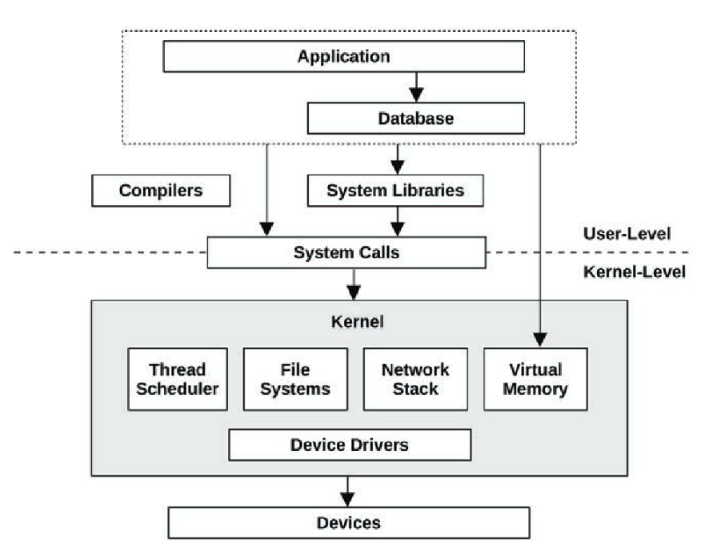

Chapter 1 — Introduction
Posted on
The system software stack

Generic system software stack, from the book.
Here, the dashed line separates the user level (application, database, compilers, libraries) from the kernel level, where the kernel manages the hardware, memory and CPU.
And the system calls in the middle are the user level's phone line to the kernel level, used to ask it for work (read a file, create a thread, etc.).
Inside the kernel
| Component | What it does |
|---|---|
| Thread Scheduler | decides which thread uses each CPU core and for how long |
| File Systems | turn "file C:\x.txt" into blocks on the disk (NTFS, ext4) |
| Network Stack | implements TCP/IP: sockets, connections and packets |
| Virtual Memory | gives each process its own isolated memory space and maps that space to the physical RAM (or to the disk, when paging) |
| Device Drivers | translate generic commands into the specific hardware (that particular SSD or network card model) |
Following a file read through the stack
| Step | Layer |
|---|---|
| 1. Your code calls the .NET API | Application |
2. The runtime calls the OS library (ReadFile on Windows) |
System Libraries |
| 3. The library makes the system call | System Calls |
| 4. The kernel locates the file | File Systems |
| 5. The driver tells the SSD to read the blocks | Device Drivers → Devices |
| 6. While it waits for the disk, the thread is free for other work | Thread Scheduler |
Activities of a performance engineer
- Setting objectives and performance modeling: establishing performance goals for a future product and estimating how it should perform.
- Performance characterization of prototypes: measuring and evaluating the performance of early versions of software and hardware.
- Performance analysis during development: testing the performance of products under development in a controlled environment.
- Non-regression testing: checking that new versions have not made performance worse compared with previous versions.
- Release benchmarking: comparing the performance of different versions of the product using standardized tests.
- Proof-of-concept testing in production: validating that a solution works properly in the real environment where it will be used.
- Performance tuning in production: improving the performance of the system that is already running in production.
- Monitoring software in production: continuously tracking the operation, resource usage and performance of the system.
- Analysis of performance issues in production: investigating problems such as slowness, high memory usage or excessive processing.
- Production incident reviews: analyzing problems that happened, identifying their causes and defining how to prevent them from happening again.
- Performance tool development: creating tools that make it easier to analyze, diagnose and monitor the performance of systems.